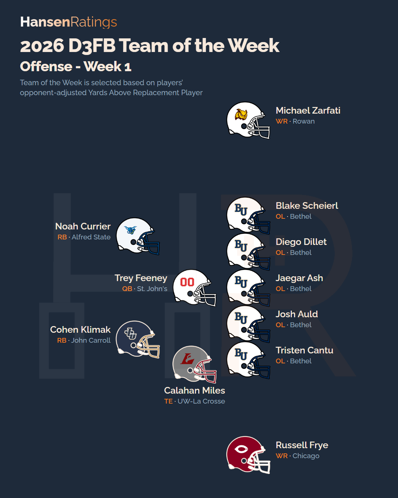
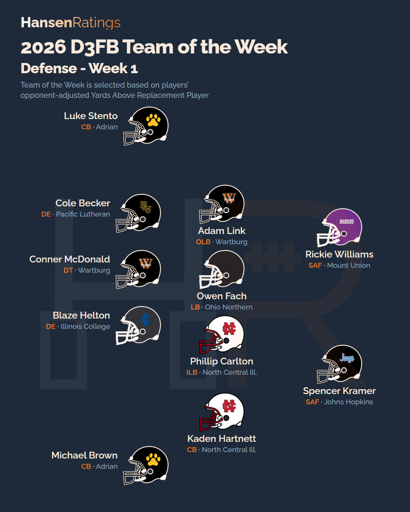
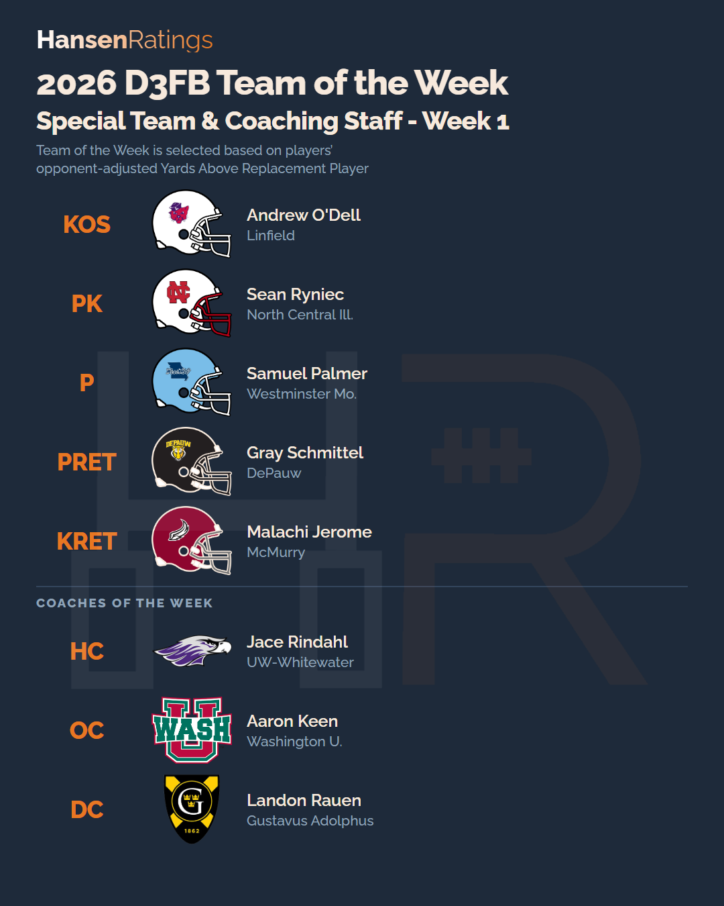

Offense
QBTrey FeeneySrSt. John's
RBNoah CurrierSrAlfred State
RBCohen KlimakSoJohn Carroll
WRMichael ZarfatiJrRowan
WRRussell FryeJrChicago
TECalahan MilesSrUW-La Crosse
OLBlake ScheierlJrBethel
OLDiego DilletJrBethel
OLJaegar AshSrBethel
OLJosh AuldSoBethel
OLTristen CantuSrBethel
Defense
DECole BeckerSrPacific Lutheran
DEBlaze HeltonSrIllinois College
DTConner McDonaldSrWartburg
OLBAdam LinkSrWartburg
LBOwen FachSoOhio Northern
ILBPhillip CarltonJrNorth Central Ill.
CBLuke StentoSrAdrian
CBMichael BrownSoAdrian
CBKaden HartnettSrNorth Central Ill.
SAFRickie WilliamsSoMount Union
SAFSpencer KramerJrJohns Hopkins
Special Teams
KOSAndrew O'DellSoLinfield
PKSean RyniecSrNorth Central Ill.
PSamuel PalmerSoWestminster Mo.
PRETGray SchmittelSoDePauw
KRETMalachi JeromeSoMcMurry
Coaches
HCJace RindahlUW-Whitewater
OCAaron KeenWashington U.
DCLandon RauenGustavus Adolphus


